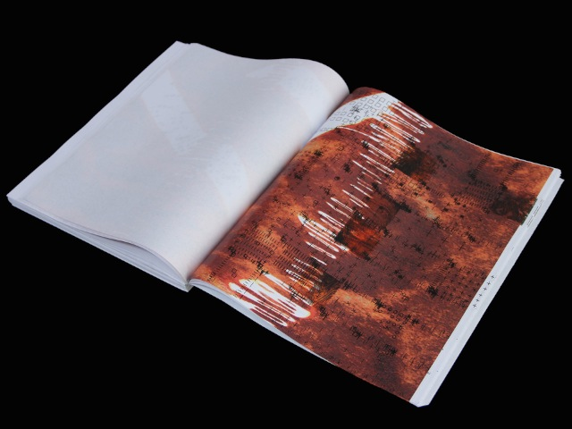
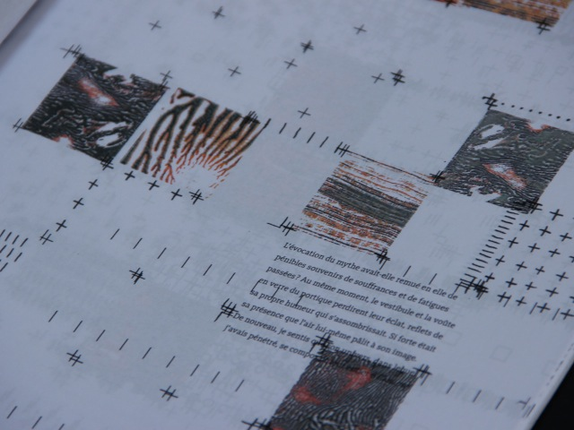
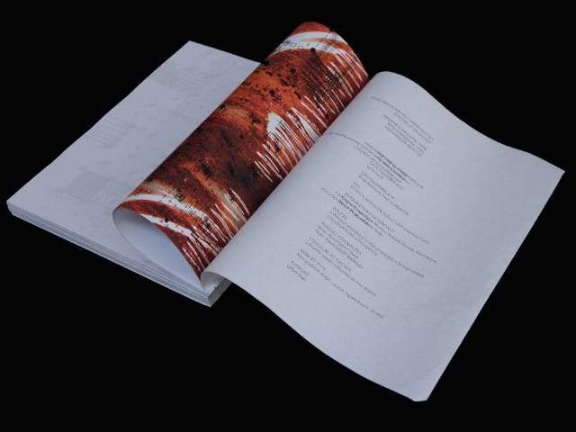
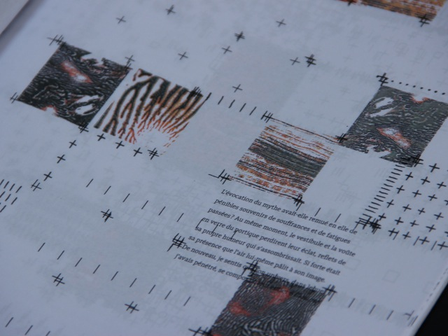
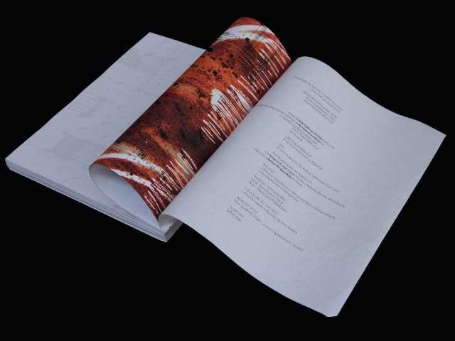

« Vermilion Sands » de J.G Ballard - enero 2018

 



Proyecto realizado en grupos entre los alumnos de ilustración y de tipografía, hemos imaginado como exponer el texto "Studio 5, Las Estrellas" publicado en Vermilion Sands y escrito por J.G Ballard.
En esta historia, la creatividad (escritura de poemas) es abandonada a las maquinas. Inspirandonos de este echo y del ambiente nebuloso omnipresente a lo largo del texto, nuestro grupo a imaginado una serie de cuadrículas y texturas que hemos imprimido de forma separada, metiendo el papel ya imprimido de nuevo en la impresora, de forma mas o menos aleatoria, donde las cuadriculas y texturas muestran la presencia de la famosa maquina en la lineas del texto. La dispoción del texte fué preparada con antelación basandose en las cuadrículas ya imprimidas.
------------------------------
Libro automático unico,
Imprimido "aleatoriamente" con archivos de caudriculas y texturas,
Papel 70gr, 300 páginas, encuadernación a la cola
23x30 cm
------------------------------

{kind=link}
{kind=link}
{kind=link}